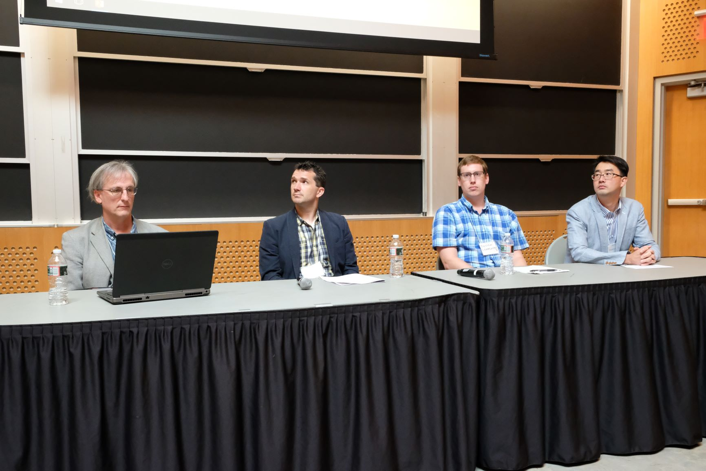

About Me
What I've Been Up To:
- 2026: Founded Delegance AI solving autonomous business operations and human+ai coordination
- 2024-2025: Open Source Developer working on AI tools & Nostr; funded by OpenSats
- 2023-2024: Senior AI Scientist at GoCharlie.ai
- 2020-2023: Scientist at Parallax Advanced Research
- 2019-2020: Scientist at Pacific Marine Technologies (formerly MDG; before that Navatek LLC) working on AI and Autonomy
- 2017-2019: NRC RAP Post-doc at the Naval Research Laboratory, working with David Aha and others
- 2012-2017: PhD in Computer Science at Lehigh University (Advisor: Héctor Muñoz-Avila)
- 2008-2012: BS in Computer Science at Indiana University Bloomington
Research Interests
Neuro-Symbolic AI, Open-world Novelty, Goal Reasoning, Automated Planning, Explainable AI, Machine Learning, Instance-based Learning, Execution Monitoring, Introspection & Metacognition, Cognitive Architectures
Publications
Refereed Conference and Workshop Proceedings
- [ICML Workshop '24]
Dannenhauer, D., Dannenhauer, Z., Christou, D., & Hatalis, K. (2024). "A Case-based Reasoning Approach to Dynamic Few-Shot Prompting for Code Generation." ICML 2024 Workshop on LLMs and Cognition. July 2024. [PDF]
- [AAAI Fall Symposium '23]
Hatalis, K., Christou, D., Myers, J., Jones, S., Lambert, K., Amos-Binks, A., Dannenhauer, Z., Dannenhauer, D. "Memory Matters: The Need to Improve Long-Term Memory in LLM Agents." Integration of Cognitive Architectures and Generative Models. AAAI Fall Symposium Series 2023. Arlington, VA. 2023. [PDF]
- [arXiv Preprint-June '23]
Bercasio, M., Wong, A., Dannenhauer D. (2023). "Human in the Loop Novelty Generation". arXiv preprint arXiv:2306.04813. [PDF]
- [arXiv Preprint-May '23]
Molineaux, M., Dannenhauer, D., & Kildebeck, E. (2023). "A Framework for Characterizing Novel Environment Transformations in General Environments." arXiv preprint arXiv:2305.04315. [PDF]
- [ACS-22]
Dannenhauer, D., Reifsnyder, N., Regester, AJ., Molineaux, M. "Transforming Environments to Evaluate Agent Adaptation." Advances in Cognitive Systems (ACS). George Mason University, Arlington, VA. 2022. [PDF]
- [AAAI Spring Symposium '21]
Molineaux, M., Dannenhauer, D. "An Environment Transformation-based Framework for Comparison of Open-World Learning Agents." Designing Artificial Intelligence for Open Worlds. AAAI Spring Symposium Series 2022. Stanford University, CA. 2022. [PDF]
- [AAAI Spring Symposium '21]
Amos-Binks, A., Dannenhauer, D., Gilpin, L. "Anticipatory Thinking Challenges in Open Worlds: Risk Management." Designing Artificial Intelligence for Open Worlds. AAAI Spring Symposium Series 2022. Stanford University, CA. 2022. [PDF]
- [ACS-21]
Dannenhauer, D., Molineaux, M., Floyd, M. w., Reifnsyder, N., Aha, D. W., "Self-directed Learning of Action Models using Exploratory Planning." Advances in Cognitive Systems (ACS). Virtual. 2021. [PDF]
- [ACS-21]
Cox, M. T., Mohammad, Z., Kondrakunta, S., Gogineni, V. R., Dannenhauer, D., Larue, O. "Computational Metacognition." Advances in Cognitive Systems (ACS). Virtual. 2021. [PDF]
- [ICAPS Planning Reinforcement Learning WS '21]
Dannenhauer, D., Dannenhauer, Z. A., Decker, J., Amos-Binks, A., Floyd, M. W., & Aha, D. W. "dcss-ai-wrapper: An API for Dungeon Crawl Stone Soup providing both Vector and Symbolic State Representations." Workshop on Bridging the Gap Between AI Planning and Reinforcement Learning. International Conference on Automated Planning and Scheduling (ICAPS). 2021.[PDF][Poster]
- [JETAI '20]
Dannenhauer, D., Munoz-Avila, H., Cox, M. T. (2020). "Expectations for agents with goal-driven autonomy." Journal of Experimental & Theoretical Artificial Intelligence, 1-23. [Article]
- [ACS-19]
Amos-Binks A., Dannenhauer, D., Aha, D. W. "Intention Dynamics of Rebel Agent Behavior." Advances in Cognitive Systems (ACS). Massachusetts Institute of Technology, Cambridge, MA. August 2019.
- [ACS-19 7th Goal Reasoning Workshop]
Amos-Binks, A., Dannenhauer, D. "Anticipatory Thinking: A Metacognitive Capability." 7th Goal Reasoning Workshop. Cambridge, MA. ACS. 2019. [PDF]
- [ACS-19 7th Goal Reasoning Workshop]
Wright, B., Floyd, M., Dannenhauer, D., Aha, D. W. "The Game of Fluxx: A Benchmark for Goal Reasoning." 7th Goal Reasoning Workshop. Cambridge, MA. ACS. 2019. [PDF]
- [AAAI-19 Workshop on Games and Simulations for Artificial Intelligence]
Dannenhauer, D., Floyd, M., Decker, J., Aha D. W. "Dungeon Crawl Stone Soup as an Evaluation Domain for Artificial Intelligence." Workshop on Games and Simulations for Artificial Intelligence. Thirty-Third AAAI Conference on Artificial Intelligence. Honolulu, Hawaii, USA. 2019. [PDF]
- [AAAI Spring Symposium '19]
Amos-Binks, A., Dannenhauer, D., Aha, D. W. "Computational Models of Rebel Agent Behavior for Interactive Narrative." Symposium on Story-enabled Intelligence. AAAI Spring Symposium Series 2019. Stanford University, CA. 2019. [PDF]
- [AAAI-19]
Munoz-Avila, H., Dannenhauer, D., & Reifsnyder, N. "Is Everything Going According to Plan? - Expectations in Goal Reasoning Agents." Proceedings of the Thirty-Third AAAI Conference on Artificial Intelligence (AAAI-19). Palo Alto, CA: AAAI Press. [PDF]
- [ACS-18 Journal]
Dannenhauer D., Cox. M. T., Munoz-Avila, H. "Declarative Metacognitive Expectations for High-Level Cognition." Advances in Cognitive Systems. 2018. [PDF]
- [IJCAI-18 Adaptive Learning Agents Workshop]
Dannenhauer, D., Floyd, M., Molineaux, M., Aha D. W. "Learning from Exploration: Towards an Explainable Goal Reasoning Agent." Proceedings of IJCAI-18 Workshop on Adaptive Learning Agents. [PDF]
- [IJCAI-18 Goal Reasoning Workshop]
Boggs, J., Dannenhauer, D. Floyd, M., Aha D. W. "The Ideal Rebellion: Maximizing Task Performance in Rebel Agents." 6th Goal Reasoning Workshop. Stockholm, Sweden. IJCAI. 2018. [PDF]
- [ICAPS-18 Explainable Planning Workshop]
Dannenhauer, D., Floyd, M., Magazzeni, D., Aha, D. W. "Explaining Rebel Behavior in Goal Reasoning Agents." Proceedings of ICAPS-18 Workshop on Explainable Planning. 2018. [PDF]
- [AAAI Spring Symposium '18]
Molineaux, M., Floyd, M. W., Dannenhauer, D., Aha, D. W. "Human-Agent Teaming as a Common Problem for Goal Reasoning." Symposium on Integrating Representation, Reasoning, Learning, and Execution for Goal Directed Autonomy. AAAI Spring Symposium Series 2018. Stanford University, CA. 2018. [PDF]
- [AAAI-18 Knowledge Extraction from Games Workshop]
Molineaux, M., Dannenhauer, D., Aha, D. W. "Towards Explainable NPCs: A Relational Exploration Learning Agent." Knowledge Extraction from Games Workshop. New Orleans, LA. AAAI. 2018. [PDF]
- [IJCAI-17 Goal Reasoning Workshop]
Dannenhauer, D., Munoz-Avila, H., and Kondrakunta, S. "Goal-Driven Autonomy Agents with Sensing Costs". Working notes of the 5th Workshop on Goal Reasoning. Melbourne, Australia. IJCAI. 2017. [PDF]
- [AAAI-17]
Cox, M. T., Dannenhauer, D., and Kondrakunta, S. "Goal Operations for Cognitive Systems." Proceedings of the 31st AAAI Conference on Artificial Intelligence. Palo Alto, CA: AAAI Press. In press. [PDF]
- [IJCAI-16]
Dannenhauer, D., Munoz-Avila, H., and Cox, M. T. "Informed Expectations to Guide GDA Agents in Partially Observable Environments." Proceedings of the 25th International Joint Conference on Artificial Intelligence (IJCAI). Palo Alto, CA: AAAI Press. 2016. [PDF]
- [IJCAI-16 Goal Reasoning Workshop]
Cox, M. T., and Dannenhauer, D. "Goal transformation and goal reasoning." M.Roberts (Ed.), Working Notes of the 4th Workshop on Goal Reasoning. New York, IJCAI. 2016. [PDF]
- [IJCAI-16 Doctoral Consortium]
Dannenhauer, D. "Self Monitoring Goal Driven Autonomy Agents." Doctoral Consortium, International Joint Conference on Artificial Intelligence (IJCAI). AAAI Press, 2016. [PDF]
- [AAAI-16]
Cox, M. T., Alavi, Z., Dannenhauer, D., Eyorokon, V., Munoz-Avila, H., and Perlis, D. "MIDCA: A Metacognitive, Integrated Dual-Cycle Architecture for Self-regulated Autonomy." Proceedings of the 30th AAAI Conference on Artificial Intelligence (AAAI). Palo Alto, CA: AAAI Press. 2016. [PDF]
- [IJCAI-15]
Dannenhauer, D., and Munoz-Avila, H. "Raising expectations in GDA agents acting in dynamic environments." Proceedings of the 24th International Conference on Artificial Intelligence (IJCAI). AAAI Press, 2015. [PDF]
- [ICCBR-15]
Dannenhauer, D., and Munoz-Avila, H. "Goal-Driven Autonomy with Semantically-annotated Hierarchical Cases." International Conference on Case-Based Reasoning (ICCBR). Springer International Publishing, 2015. 88-103. [PDF]
- [ACS-15 Goal Reasoning Workshop]
Munoz-Avila, H., Dannenhauer, D., and Cox, M. T. "Towards cognition-level goal reasoning for playing real-time strategy games." Goal Reasoning: Papers from the ACS Workshop. 2015. [PDF]
- [BICA-14]
Dannenhauer, D., Cox, M. T., Gupta, S., Paisner, M. and Perlis, D. "Toward meta-level control of autonomous agents." In Proceedings of the 2014 Annual International Conference on Biologically Inspired Cognitive Architectures: Fifth annual meeting of the BICA Society (BICA). Elsevier/Procedia Computer Science, 41, 226-232. 2014. [PDF]
- [AIIDE-13 Doctoral Consortium]
Dannenhauer, D. "Ontological Knowledge for Goal-Driven Autonomy Agents in Starcraft." Doctoral Consortium, 9th Artificial Intelligence and Interactive Digital Entertainment Conference (AIIDE). 2013. [PDF]
- [ACS-13]
Dannenhauer, D. and Munoz-Avila, H. "LUIGi: A Goal-Driven Autonomy Agent Reasoning with Ontologies." Advances in Cognitive Systems Conference (ACS). 2013. [PDF]
- [ICCBR-13]
Dannenhauer, D., Munoz-Avila, H. "Case-based Goal Selection Inspired by IBM's Watson." International Conference on Case-Based Reasoning (ICCBR). Springer. 29-43. 2013. [PDF]
PhD Dissertation
- Dannenhauer, Dustin. "Self Monitoring Goal Driven Autonomy Agents." (2017). Theses and Dissertations. 2564. htp://preserve.lehigh.edu/etd/2564
Magazine Articles and Blurbs
- [AI Magazine Summer 2023]
- Co-edited the 2023 Special Issue of AI Magazine on Anticipatory Thinking

- Authored the introductory article titled The Anticipatory Paradigm
- Co-edited the 2023 Special Issue of AI Magazine on Anticipatory Thinking
- [AI-Topics 2017] Dannenhauer, D. "Planning and Scheduling." AI Topics. Apr. 2017. Web.
Miscellaneous (Data, Ontologies, etc)
- [Manual for MIDCA 1.4] Dannenhauer, D., Schmitz, S., Eyorokon, V., Gogineni, V. R., Kondrakunta, S., Williams, T., & Cox, M. T. (2019). MIDCA Version 1.4: User manual and tutorial for the Metacognitive Integrated Dual-Cycle Architecture (Tech. Rep. No. COLAB2-TR-3). Dayton, OH: Wright State University, Collaboration and Cognition Laboratory. [PDF]
- [Ontology for Starcraft: Broodwar] Dustin Dannenhauer, William West, & Kostas Hatalis. (2013). Ontology for Starcraft used in LUiGi and LUiGi-H [Data set]. Zenodo. http://doi.org/10.5281/zenodo.804944
Service
- 2022 Reviewer for International Conference on Automated Planning and Scheduling (ICAPS-2023)
- 2022 Reviewer for the Advances in Cognitive Systems Conference (ACS-2022)
- 2021 Reviewer for the Advances in Cognitive Systems Conference (ACS-2021)
- 2021 Reviewer for the 9th Workshop on Goal Reasonign at Advances in Cognitive Systems Conference (GRW @ ACS-2021)
- 2021 Reviewer for the Integrated Planning and Execution Workshop (IntEx) (ICAPS-2021)
- 2021 Reviewer for the International Conference on Case-based Reasoning (ICCBR-2021)
- 2020 Program Committee Reviewer for the 29th International Joint Conference on Artificial Intelligence (IJCAI-2020)
- 2019 Program Committee Reviewer for the Thirty-Third AAAI Conference on Artificial Intelligence (2019)
- 2019 Organizer for the 7th Goal Reasoning Workshop held at ACS-2019
- 2018 Co-Organizer for the 6th Goal Reasoning Workshop held at FAIM-2018 (ICJAI / ECAI 2018)
- 2018 Publicity Chair for the International Conference on Case-based Reasoning (ICCBR-2018)
- 2018 Program Committee Reviewer for International Conference on Case-based Reasoning (ICCBR-2018)
- 2018 Reviewer for the Knowledge Extraction from Games Workshop (AAAI-2018)
- 2018 Organized and chaired the Second Annual MIDCA Workshop at Wright State University
- 2017 Program Committee Reviewer for the Thirty-Second AAAI Conference on Artificial Intelligence (2018)
- 2017 Program Committee Reviewer for 5th Goal Reasoning Workshop at the International Joint Conference on Artificial Intelligence (IJCAI-2017)
- 2017 Reviewer for the Fifth Annual Conference on Cognitive Systems at Rensselaer Polytechnic Institute, Troy, New York
- 2017 Organized and chaired the First Annual MIDCA Workshop at Wright State University
- 2014 Vice President of the Graduate Student Senate at Lehigh University
- 2013 Organized and facilitated a student panel as part of the 2nd Workshop on Goal Reasoning at the Conference on Advances in Cognitive Systems (ACS)
Conferences/Workshops/Seminars
- 2023 Association for the Advancement of Artificial Intelligence (AAAI-23), Washington, DC.
- 2022 2022 Advances in Cognitive Systems (ACS). George Mason University, Arlington, VA.
- 2021 International Conference on Automated Planning and Scheduling (ICAPS). Virtual.
- 2021 Advances in Cognitive Systems. Virtual.
- 2020 Virtual International Symposium on Cognitive Architecture (online, host U. Michigan)
- 2019 Protege Short Course, Stanford, CA
- 2019 Advances in Cognitive Systems, Cambridge, MA
- 2019 7th Goal Reasoning Workshop (@ ACS 2019), Cambridge, MA
- 2019 Science of Deep Learning Colloquia, National Academy of Sciences, Washington, D.C.
- 2019 DARPA AI Colloquium, Alexandria, VA
- 2018 DARPA's 60th Anniversary Symposium, National Harbor, MD
- 2018 The Sixth Annual Conference on Advances in Cognitive Systems (ACS), Stanford, CA
- 2018 International Joint Conference on Artificial Intelligence (IJCAI-19), Stockholm, Sweden
- 2018 International Conference on Planning and Scheduling (ICAPS-18), Delft, The Netherlands
- 2018 Association for the Advancement of Artifcial Intelligence (AAAI-18), New Orleans, LA
- 2018 Second Annual MIDCA Workshop, Wright State University
- 2017 5th Goal Reasoning Workshop (@ IJCAI-17), Melbourne, Australia
- 2017 International Joint Conference on Artifcial Intelligence (IJCAI-17), Melbourne, Australia
- 2017 First Annual MIDCA Workshop, Wright State University
- 2016 International Joint Conference on Artificial Intelligence (IJCAI), New York City, NY
- 2016 Association for the Advancement of Artificial Intelligence (AAAI), Phoenix, AZ
- 2015 International Joint Conference on Artificial Intelligence (IJCAI), Buenos Aires, Argentina
- 2015 Advances in Cognitive Systems (ACS), Atlanta, GA
- 2013 Advances in Cognitive Systems (ACS) , Baltimore, MD
- 2013 Artificial Intelligence and Interactive Digital Entertainment (AIIDE), Boston, MA
- 2013 International Conference on Case-based Reasoning (ICCBR), Saratoga Springs, NY
- 2011 Association for the Advancement of Artificial Intelligence (AAAI), San Francisco
- 2011 Machine Learning Summer School, Purdue University, June 13th - 24th
Miscellaneous
Picture from the ACS 2019 Panel on Goal Reasoning

- Custom Lehigh-themed LaTeX beamer presentation (for fellow lehigh'ers): LehighThemedLaTeXBeamerTemplate.zip